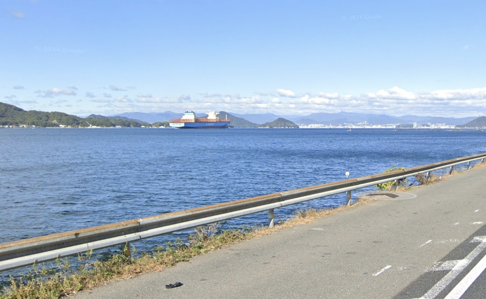

Yoshiura Running Course
A course with beautiful scenery along the coast.

Course Basic Information
- Distance: About 4.7 km
- Surface: Asphalt
- Elevation: Low
- Start Point: Yoshiura Station
Course Description
A course that starts at Yoshiura Station and runs along the coast. With few traffic lights, it's easy to maintain a steady pace, making it ideal for beginners. The scenery is particularly beautiful in the morning and evening, making for a pleasant run.
Recommended Points
- ✔ Few traffic lights, easy to run
- ✔ Ideal for beginners and jogging
- ✔ Beautiful scenery, perfect for a mood change
Caution
- ・There are many cars and the sidewalks are narrow
- ・In winter, it gets dark early in the evening